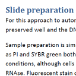
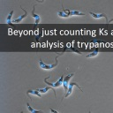

"HTIAoT" is a set of protocols and tools for double DNA staining of trypanosomes, colour deconvolution to separate the kinetoplast and nucleus signal, and high throughput image analysis of trypanosomes using this foundation. These tools are written in the macro language of ImageJ, a free and open source piece of scientific image analysis software.
These techniques and tools be used on many species of trypanosome, Leishmania, Crithidia, etc. If you are using these tools or techniques please cite the corresponding paper: Wheeler RJ, Gull K, Gluenz E (2012) "Detailed interrogation of trypanosome cell biology via differential organelle staining and automated image analysis" BMC Biology, 10:1.
ImageJ macrosThe automated analysis tools (released under the GNU general public license 3). This macro set needs to be installed in ImageJ to perform colour deconvolution and automated analysis.
Example imagesExamples of what a well-prepared sample should look like. Two tif format images of procyclic T. brucei. Each image includes three slices, DAPI fluorescence (slice 1), PI fluorescence (slice 2) and phase contrast (slice 3).
Sample preparation guidelinesProtocols and tips for sample preparation and image capture. Covers sample fixing, permeabilisation and staining and micrograph capture including common problems.
Image analysis instructionsDetailed instructions for performing colour deconvolution and an automated analysis of micrographs. Walks through the different tools used for an automated analysis step-by-step.
The paperWheeler RJ, Gull K, Gluenz E (2012) "Detailed interrogation of trypanosome cell biology via differential organelle staining and automated image analysis" BMC Biology, 10:1
The presentation"Beyond just counting Ks and Ns; high throughput image analysis of trypanosomatid cell organisation" presented at the 2011 Kinetoplastid Molecular Cell Biology Meeting
The poster"High throughput image analysis of trypanosomatids - differential DNA staining and colour deconvolution", presented at the 2011 BBSRC 5 Annual Systems Biology Grant Holders' Workshop
These automated analysis tools can collect a huge quantity of information very quickly, however to use them you will need some understanding of how the automated analysis works in order to be able to troubleshoot any issues. For more information about analysis and troubleshooting problems see the detailed instructions for image analysis. You will also need to prepare samples with care. While a computer is far faster at quantitative analyses than a person it is also far less "clever"; problems with sample preparation will disrupt the automatic analysis. For more information about sample preparation see guidelines for sample preparation and image capture. You can download some example images to try out the software without worrying about sample preparation. These images also give an idea of what a good sample for automated analysis looks like.
If you have any questions or problems please get in touch.